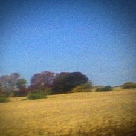

Sun Kil Moon - Benji
review by ScubDomino
2025.11.10

on may 18th 2013, sun kil moon frontman mark kozelek's second cousin, carissa, died following a freak accident involving burning trash containing flammable gas in aerosol cans. it was the second freak incident in kozelek's family, with the other involving his uncle, who was carissa's grandfather, and who also died in the exact same way. this string of accidents was what motivated kozelek into creating a singer-songwriter folk album called Benji.
Benji talks about a whole load of different topics, with many of the highlights in it about death and mortality. a lot of those same macabre topics, however, often take a backseat to the unflattering, yet straightforward and personal descriptions of the life behind the people in the lyrics of these songs. they're descriptions that, through the good and the bad, bring to life the people in his stories, rather than inoffensive and positive statements like "they were a good soul in life and they smiled all the time", or indifferent and cold statements like "they went to this school and majored in computer science".
and when death is actually being discussed in these songs, the lyrics are written in so much melancholia and poignancy that it delves much in personal thoughts, but also so much consciousness and realism that it doesn't hop off the deep end with its contemplation.
with that being said, the record also dabbles in a whole lot of places with no real grand perspective, message, or story, whether it be the concern for friends living in disaster-struck areas in Pray for Newtown, the ability to look beyond a parental figure's flaws and understand them as people in I Love My Dad, or the indescribable twisting in our heads as our brains try to process any form of death in I Watched the Film the Song Remains the Same, Micheline, and Carissa. they're all written in such a straightforward and realistic way involving reference to various tv shows, movies, music, and brand names, and in turn they show the amount of different compelling stories that you can derive of a simple string of related events. the album is written with so much realism and depth to it, in fact, it comes to the point where if it would be more impressive if it were fictional.
ultimately, this album does seem like a scattered series of gentle stories connected only by death, but maybe that's really what this album is all about. stories of various people going through the hurdles of life, doing what they feel is right, and undeservedly losing against the dice dealt by it. and instead of remembering them through sappy and positive words, knowing what their taste in music is, what they liked to order in their favorite restaurant, and their flaws, both physical and mental, feels like it's a lot closer to what we knew of those who passed.
apart from the lyricism, the album also presents itself in a pretty stripped back and gentle fashion, having only one instrument for a lot of the tracks, with some percussions added sporadically. the only exceptions are Dogs (which referenced the Pink Floyd track of the same title), I Love My Dad, which features a contextually appropriate dad rock-esque instrumental, and Ben's My Friend, which brings us back down to the present and down to earth after all the album's melancholy. other special highlights in the instrumentals of this album to me are Jim Wise, a track that sounds almost ominous and campfire-song-ish, as well as Micheline, which features a gentle guitar ballad, and ends the mostly melancholic part of the album with a fairly sweet note.
and at the epilogue of the album, as any conclusion to the constant melancholia that hits him as much as many of us goes, we'll eventually need to get back to thinking about what we should eat for dinner tonight. ♦